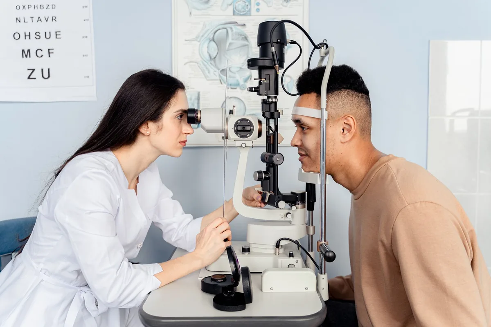
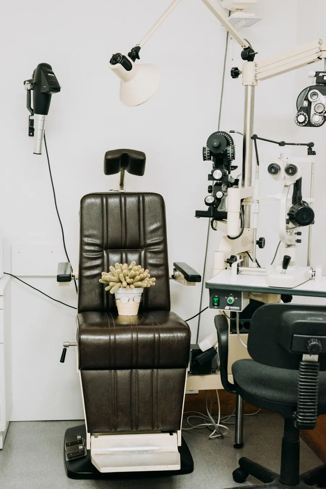
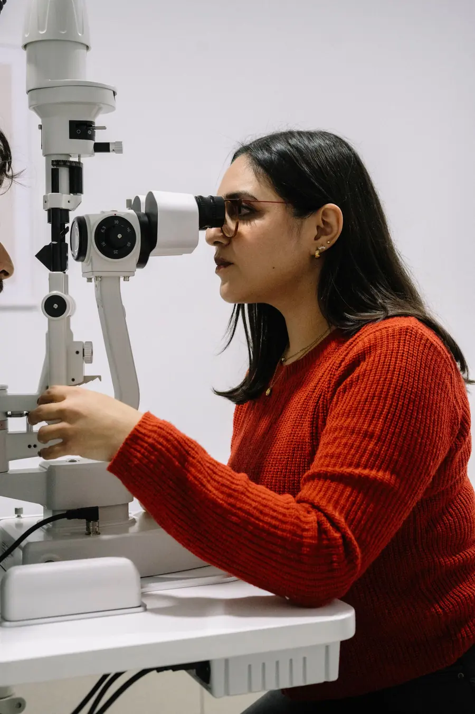
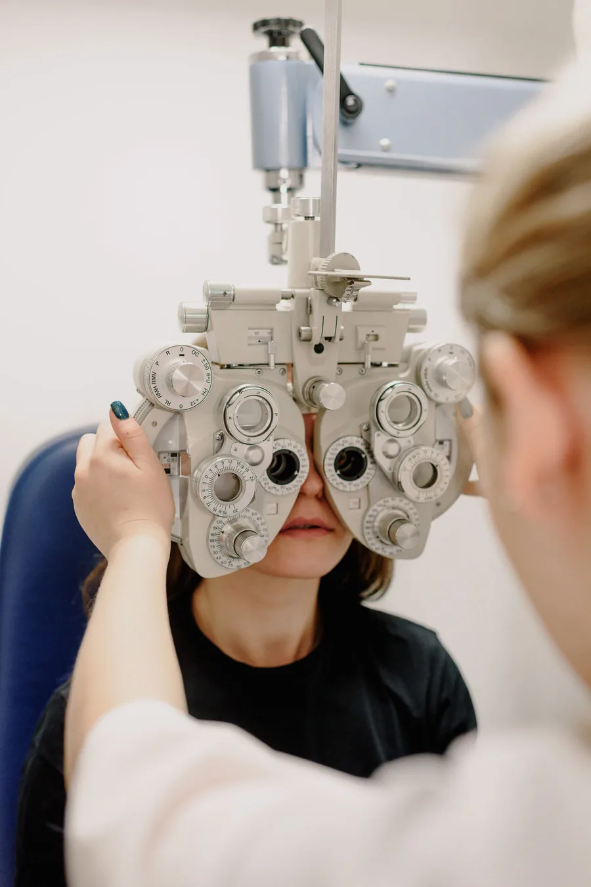
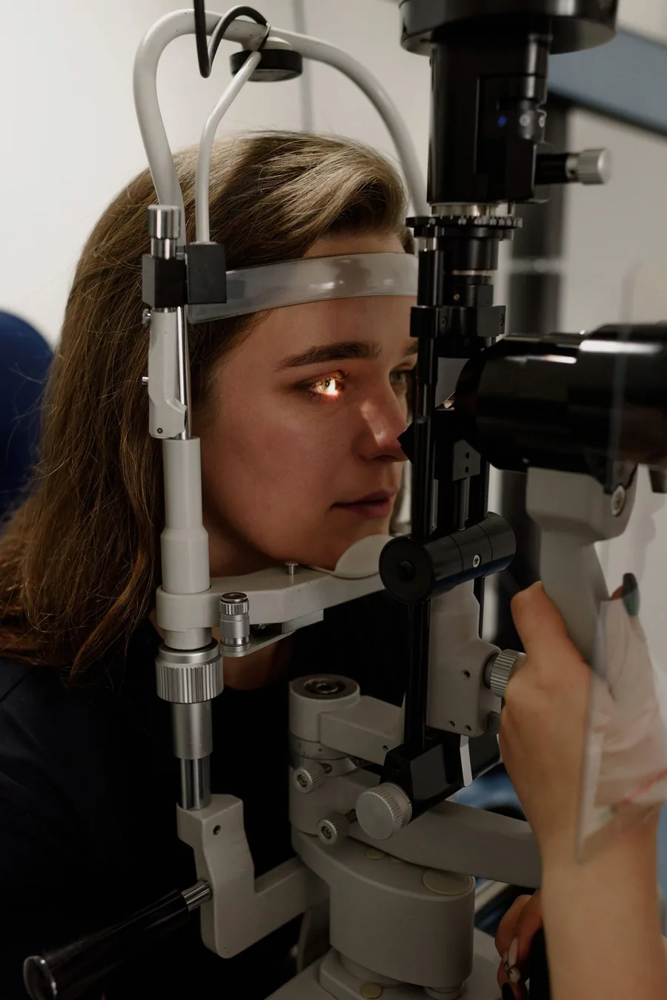
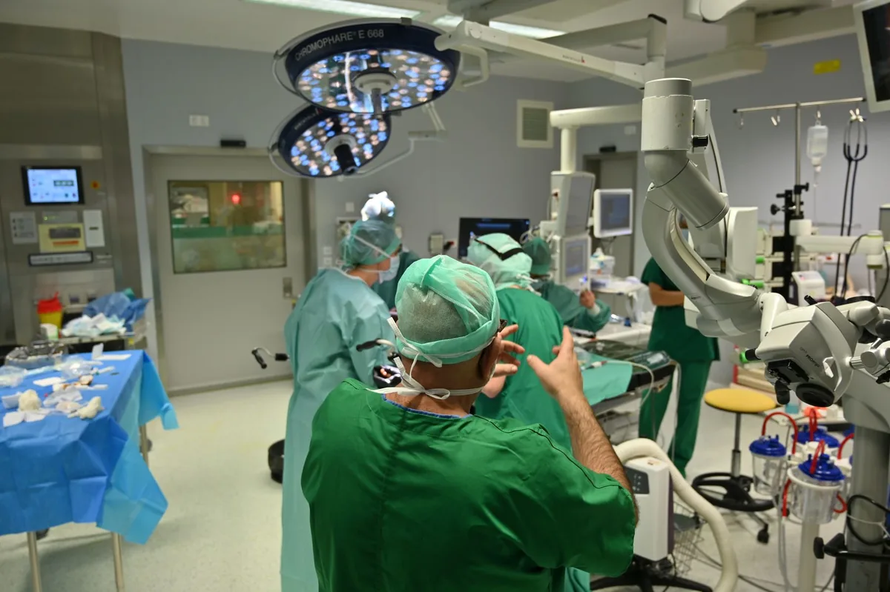
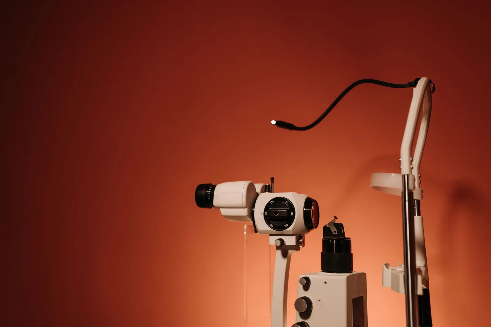

Comprehensive Eye Examination
Forty-one measurements in three stages, assembled into a single baseline map of your eyes.
An ophthalmic care network built like an instrument — micron-accurate diagnostics, refractive surgery and vision design, delivered by clinicians who refuse to guess.



Every Stackly clinic is audited annually by independent ophthalmic boards across three continents.

Stackly began in a two-room clinic in Rotterdam with a single belief: vision is not measured, it is understood. Three decades later that belief still drives every scan, every prescription and every surgery we perform.



Each department runs its own diagnostic suite, so a single visit can carry you from refraction to surgical planning without leaving the floor.
Forty-one measurements in three stages, assembled into a single baseline map of your eyes.

Wavefront-guided correction planned on your own corneal topography, never a population average.

An optical atelier, not a shop. Frames chosen against your facial geometry, lenses cut in-house to a ±0.01 D tolerance.
Scleral, toric and keratoconus fits measured against corneal sagittal depth so nothing touches where it shouldn’t.
A play-first clinic where children chart their own eyes, screening for amblyopia and digital strain before school starts.

Long-horizon monitoring for chronic conditions, with alerts triggered before a field is lost.
The entire eye on a single floor — cornea, retina, glaucoma, paediatrics and refractive surgery, each led by a clinician who publishes, teaches and operates.
Across eleven subspecialties and 22 countries — the entire eye, handled in house.
See availability


You arrive, we listen. Before anything is measured, your history, habits and ambitions are recorded — then a full biometric map of both eyes is built to compare against in every visit that follows.
Forty-one measurements across five machines. Two clinicians read the same data independently and reconcile — so a rare finding is never waiting on one pair of eyes.
The plan is simulated on your own corneal geometry first. You see the predicted outcome, the alternatives and the risks before a single instrument is picked up.
Your measurements become a lifetime baseline. Every future scan is diffed against it, and change — however small — is caught long before it becomes a symptom.
Twelve instruments, one shared data layer. Select an instrument to watch it interrogate tissue in real time.


Structured care for the conditions that ask for patience: planned, measured and reviewed on a schedule you can hold us to.

Phacoemulsification with premium intraocular lenses — planar, astigmatic and multifocal — chosen against your actual daily light exposure.

Pressure therapy that adapts: drop schedules, laser trabeculoplasty or micro-stents — escalated only when the trend line says so.

Anti-VEGF protocols, focal laser and diabetic retinopathy surveillance — scheduled around your metabolism, not our calendar.
Four figures we publish every year, each verified against our clinical register. Scroll the record sideways — every image is our own.
Every consultation logged to the clinical register since the first chair, 1994.
Verified by an independent post-visit survey, published unedited.
03 / 04
Clinics, lens labs and research hubs combined under one standard.
04 / 04
Each audited annually against our published standard of care.

Twelve thousand verified reviews. This is the part we are least able to fake, so we keep it close.
“I had three opinions before Stackly and one after. The difference was that Dr. Berg showed me the scan, not the diagnosis — I understood my own eye for the first time.”
“Booked at nine, walking out by two, reading the drive home without glasses the next morning. The team is alarmingly precise and completely unhurried about it.”
“My six-year-old was charting her own eye before the optometrist had finished introducing himself. She now refuses to do vision homework anywhere else.”
“Fourteen years of diabetic monitoring and not a single surprise. The alerts reach me before I feel anything — which, from a clinic, is exactly the right kind of annoying.”
Eight spaces, twenty-one rooms — every one documented each quarter and open to patients before they arrive.


Tell us who you are and when suits. A coordinator confirms within one working hour — no queue, no call centre.